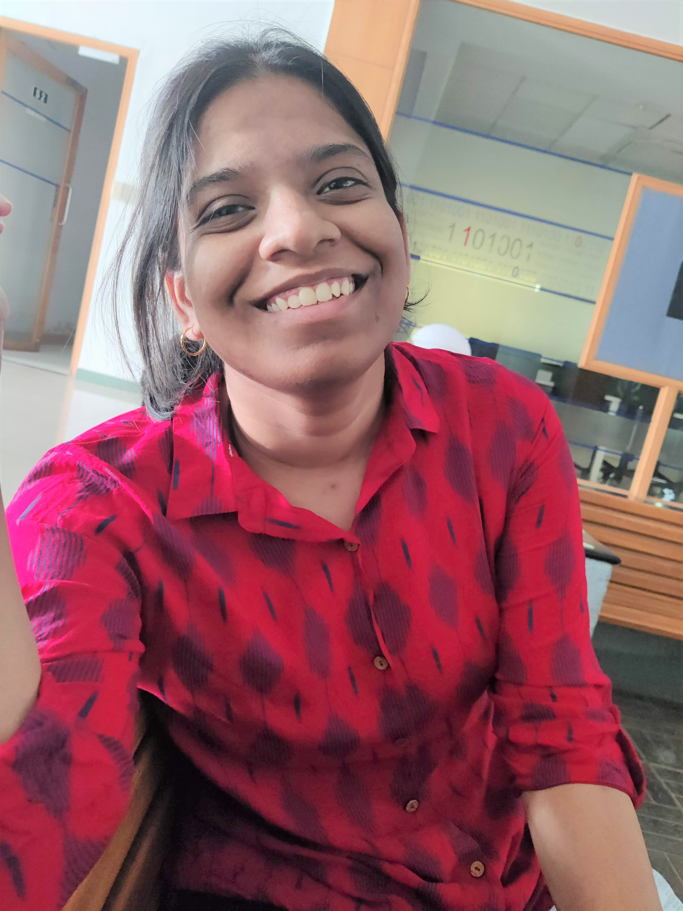

Apurva K S
Software Engineering Intern at Qualcomm India (from January,2022)
Master of Technology,
International Institute of Information Technology, Bangalore
Email: Sambhavi.Apurva@iiitb.ac.in
Email(Personal): sambhaviapurva0205@gmail.com

About me
I am currently working as Software Engineer intern at Qualcomm, India.
Before that, I completed my Masters from
IIIT-Bangalore in Computer Science and Engineering in 2022.
Education
-
M.Tech in Computer Science Engineering
2020-2022
Specialization AIML
CGPA 3.85/4.00
IIIT Bangalore
-
B.Tech in Computer Science Engineering
2015-2019
CGPA 8.33/10.00
Andhra University College of Engineering
-
Intermediate
2013-2015
Percentage 98.5%
Narayana Junior College
Internship and Experiences
-
Intern at Qualcomm
January, 2022-June, 2022
Worked on CPU performance enhancement and Geekbench workloads.
-
Teaching Assistant at IIIT-Bangalore
Assisted students and professor in Software Systems course.
-
Summer intern at Qualcomm
May, 2021-July, 2021
Worked on SE Linux, Android Automotives and Android Framework Restart issues
Projects
-
OCR Document Validation
-
This project is a part of MOSIP which is an open source identity platform that helps Governments and other
user organizations implement a digital, foundational identity system in a cost effective way.
-
The core objective of this project is to perform validation of Documents using OCR.
-
Optical Character Recognition is performed using Tesseract, an OCR library.
Technologies used: Eclipse Vert.x, Spring boot, Tesseract
-
PE project (2nd sem)
-
VR projects
-
Organ donation Portal
-
The core object of the project is to get hands-on practical experience on Continuous Integration and Continuous
Deployment (CI/CD) pipeline.
-
Implemented REST APIs for client-server communication.
-
Implemented registration and login authentication of primary and secondary users.
-
Implemented Hospital Registration page and mechanism to search for organ based on blood group and hospital.
Technologies used: Angular, Spring Boot, Git, Jenkins, Maven, Ansible, Docker, ELK Stack
-
XML Analytics
-
This project focuses on implementing OLAP operations like dice, slice, roll-up on XML data.
-
Implemented basic OLAP operations on relational database.
-
Implemented OLAP operations on Star Schema XML data, with 3 dimension tables and 1 fact table. (Dimensions
- Customer, Product, Stores; Fact - Product Sales)
Technologies used: Java, XML, XQuery, SaxonHE10-3J
-
Online Banking Management System
May, 2021-July, 2021
-
Online Banking Management System is a command Line Tool, implemented using linux System calls.
-
In this application, I have implemented File Locking, Multithreading, Synchronization and Inter Process Communication Mechanisms making it more reliable and available to multiple users simultaneously.
Technologies used: C, Linux System Calls
-
ML project